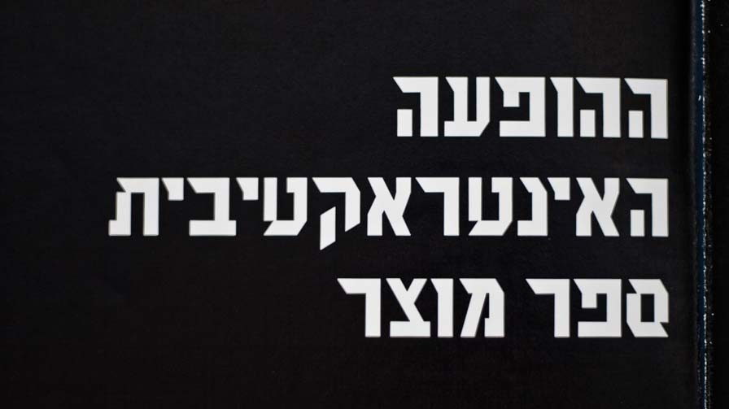
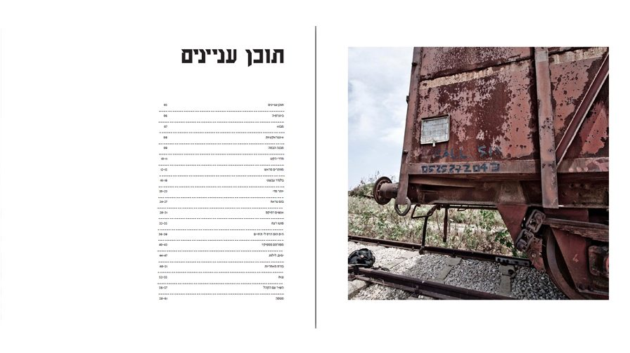
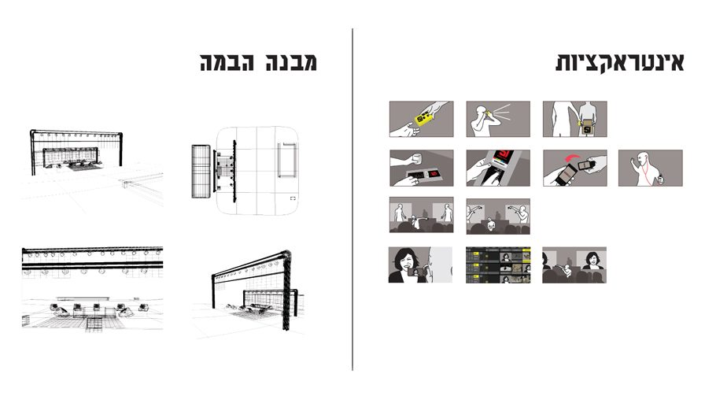
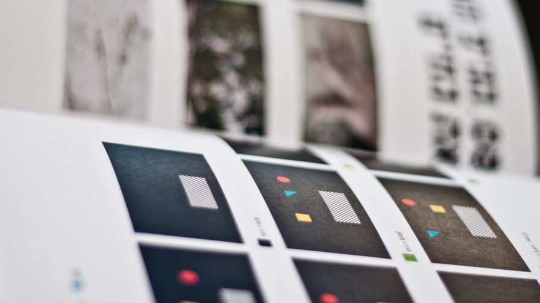
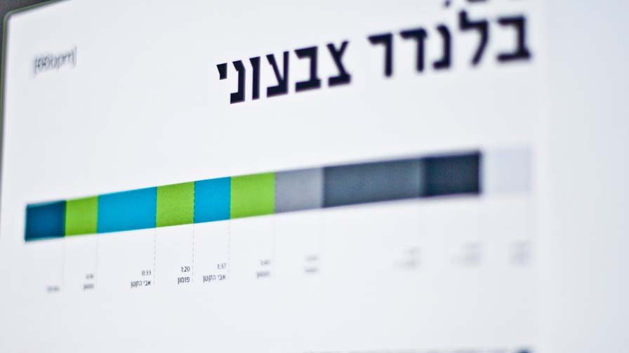
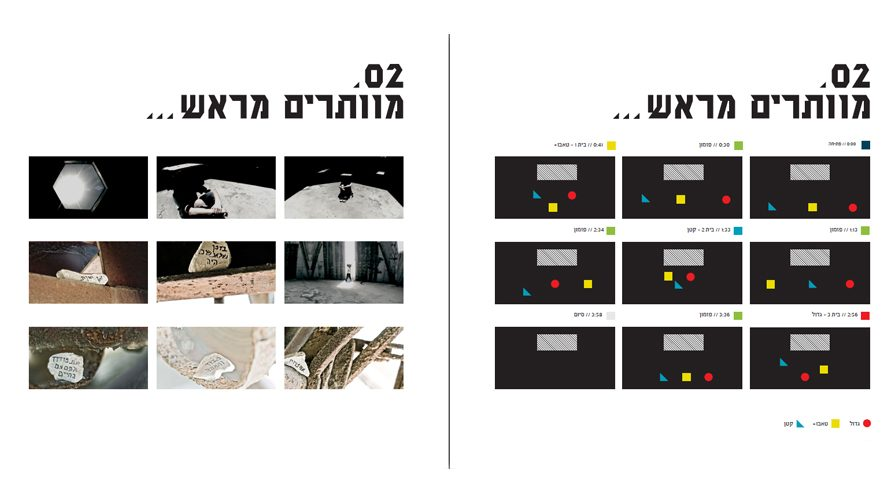
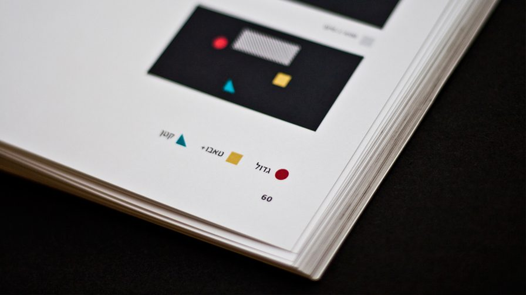
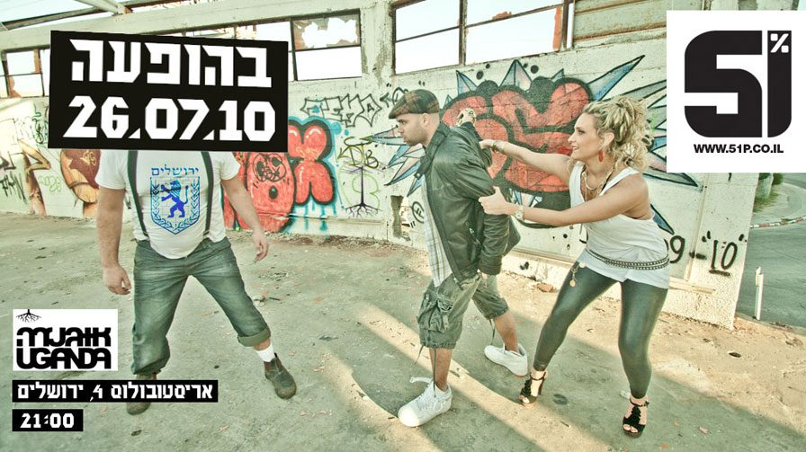
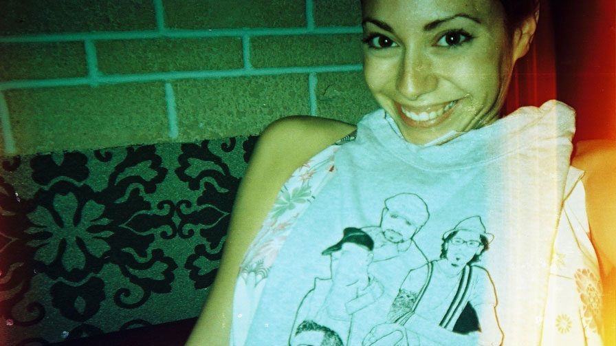
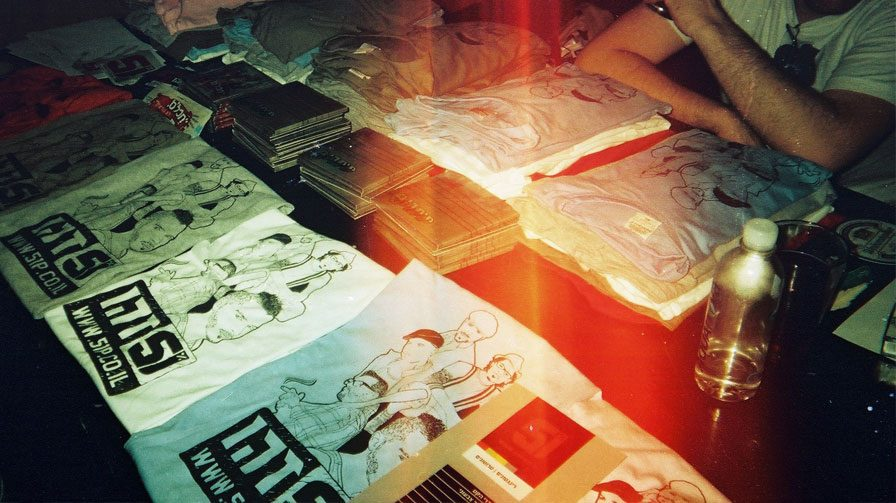
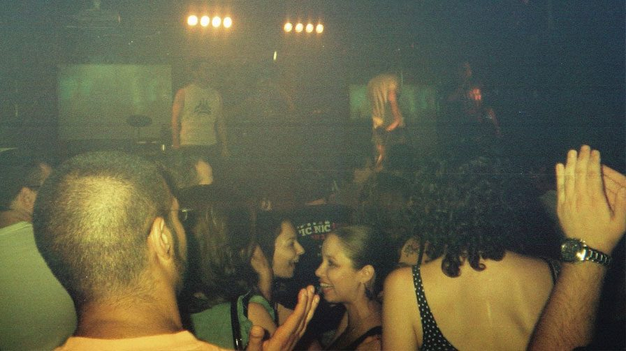
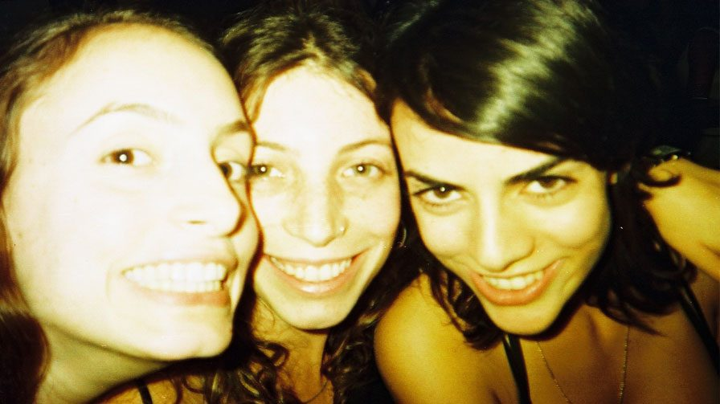
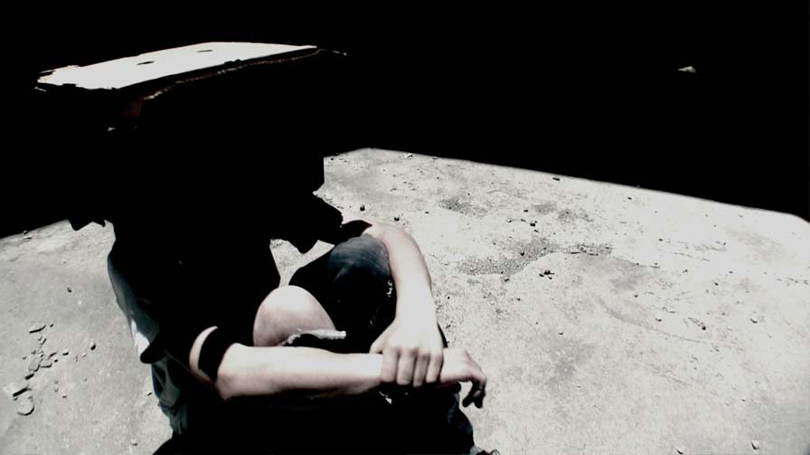
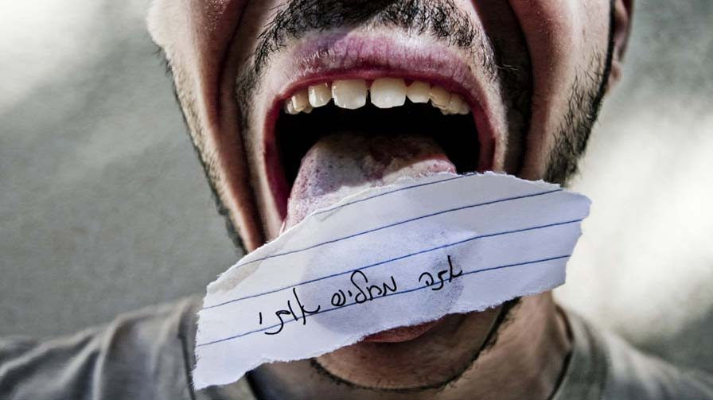
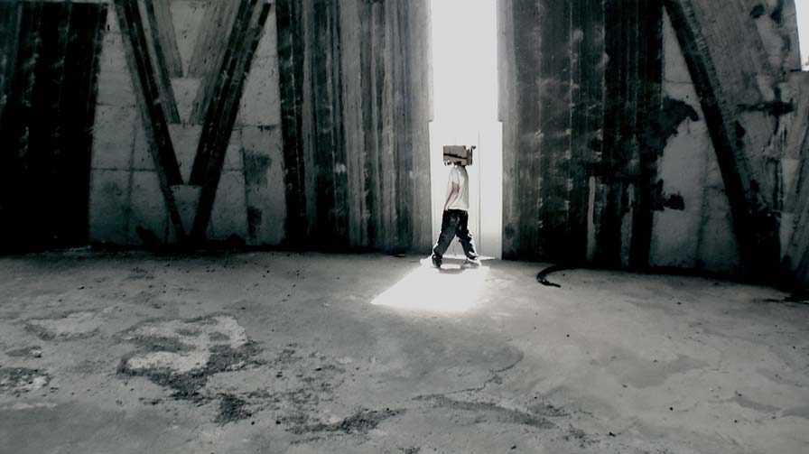
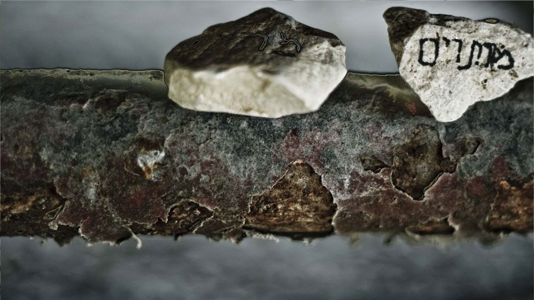
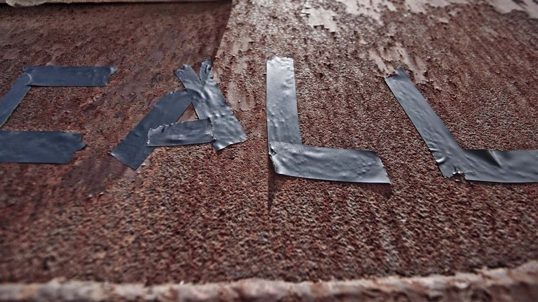
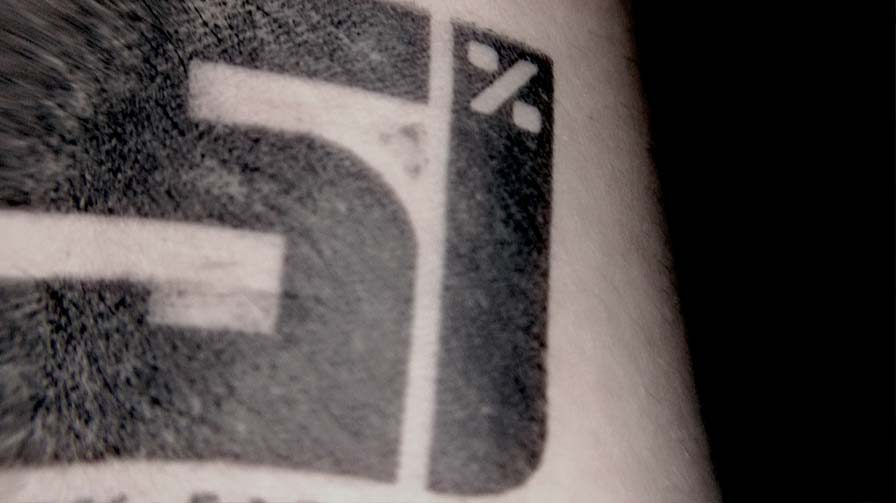
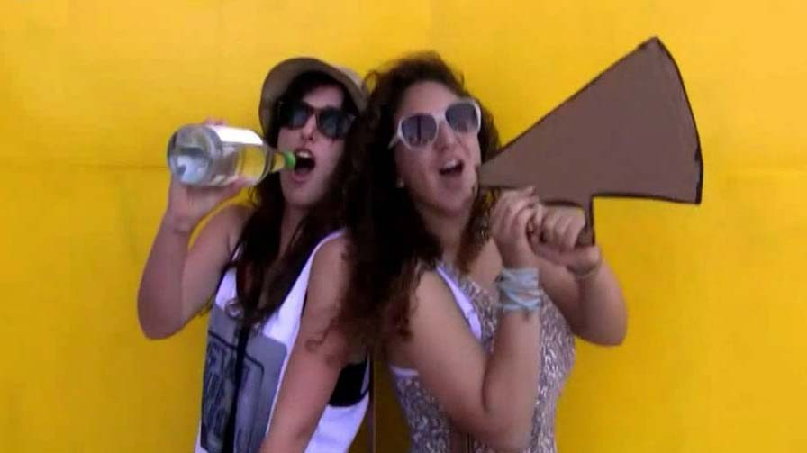
Background - The interaction show was my final project at the Holon Institute of Technology (HIT) faculty of design. I felt that the final project was an opportunity to create a multi-disciplinary production, connecting all the platforms I know. I remember that the teacher had told us (students) to create a project aimed toward the area of specialty we wanted to be in. Because my loves are music and performance, the stage as a main platform for the project was an obvious choice for me.
The first steps were thinking about the concept and consulting my fellow band members to see whether they were capable of handling the responsibility of being a part of my project. Then it was an enormous effort to connect and combine teacher's opinions with the band's demands so that everyone would be happy.
When I got down to business, I started analyzing the band's songs along the following lines:
I looked at many more factors in a project book containing 50 pages of examples, analysis, and conclusions. (Someday I'll translate it to English.)
Concept – Creating a performance that is influenced by the crowd. The attributes that are influenced are sound (velocity, shape), light (power, beat), and VJ (content, beat, power). The idea to let the crowd influence the performers and performance came from a research project in which I concluded that by participating, the audience's experience is more memorable and enjoyable.
Brand Show Book – I have created a brand book to be given to every participant in the show (the soundman, light-man, performers, guests, barman, DJ and VJ). Each one of the participants needs to learn the book and know what's going to happen in the event. The steps of the performance are depicted in info-graphics that illustrate each part clearly. In the book there is a special section for the interactions with the crowd and where they come during the show. Each song is disassembled into parts via a timeline: verses, hooks, c-parts, and so forth. Each part has its scenario and each participant knows what do (VJ – which videos to play, DJ – which scratch to make, and so on).
VJ - The show has its own thematic graphic language. I have created VJ loops that connect to each song by its meaning. The loops are linked to songs and build to manipulate during the song; moreover, they are interconnected, becoming layers in a joined video. Although I would prefer to be the VJ, light-man, and more, it is not possible to perform these roles simultaneously.
Stage Structure – the model of the stage structure was built to fit small clubs and performance halls. We are a small band, and basically this project aims to help small bands enhance their performance. On the equipment menu we have several projectors across the stage, small web cams scattered around the club, several microphones around the audience, smart lighting, and many laptops. The show has some attributes- sound, light, VJ, and band members- that are influenced by the audience. For more information please check out some of the videos here. I'll soon upload a more inclusive PDF.
Project finished on August, 2010
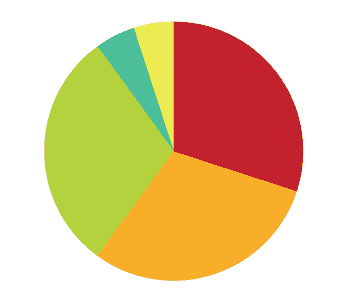
{kind=link}